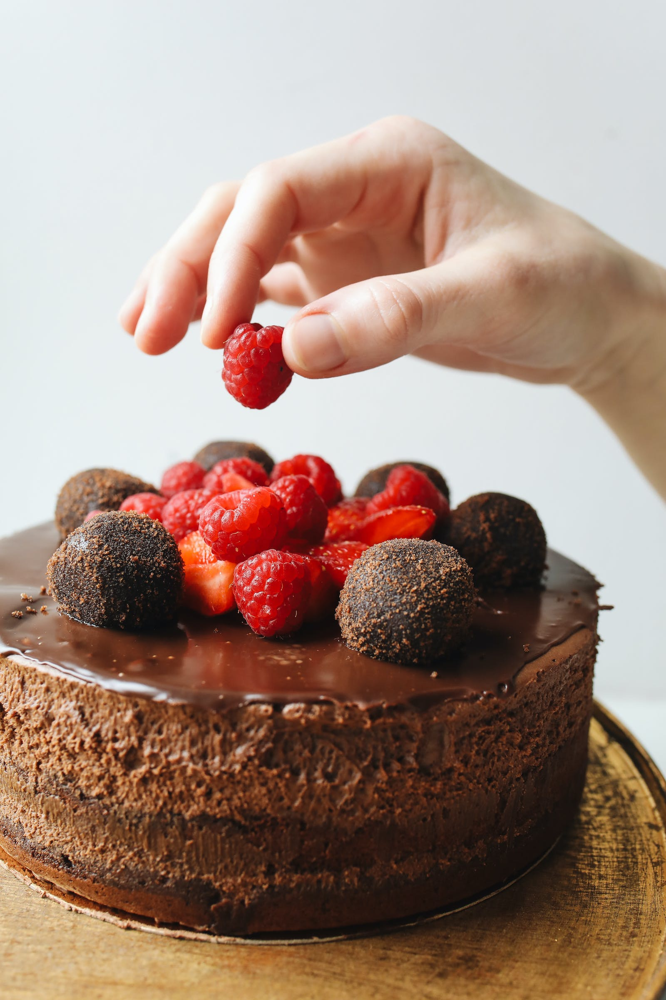
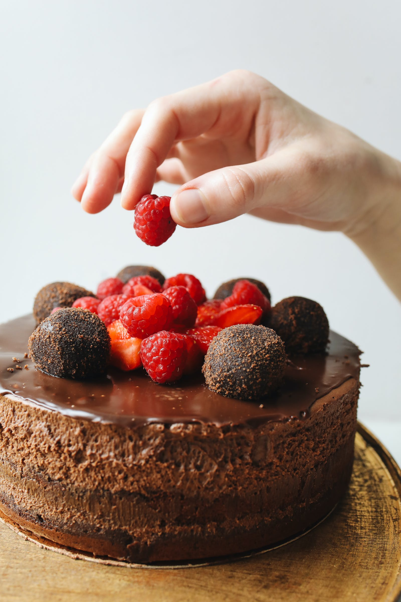

Bolos Caseiros da Aline

Sejam bem-vindos!

 


Com sabores e cheirinho que fazem recordar o aconchego do lar,
o Bolos Caseiros da Aline nasceu com o propósito de oferecer aos
clientes deliciosos momentos por meio de nossos bolos artesanais.
Aqui tudo é feito
com muito carinho e valorizando seu investimento e confiança no nosso
trabalho.
Temos a grata satisfação em contribuir para melhorar o seu dia!
E afinal, vai um bolinho aí? ^^